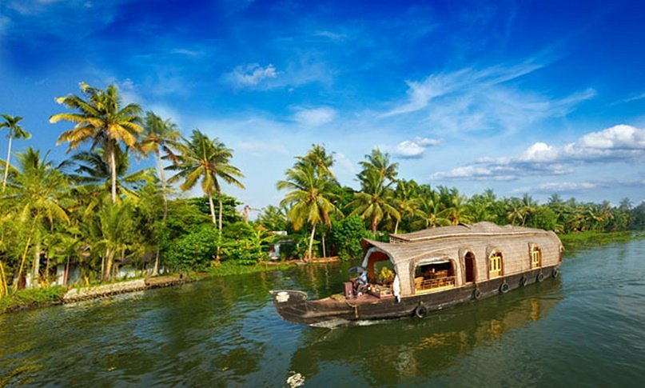

ALLAPUZHA
Alappuzha or Alleppey is the administrative headquarters of Alappuzha district in state of Kerala, India. The
Backwaters of Alappuzha are one of the most popular tourist attractions in India
which attracts millions of domestic and international tourists.
Alleppey is a city and a municipality in Kerala with an urban population of 174,164 and ranks third among the
districts in literacy rate in the state. In 2016, the Centre for Science and Environment rated Alappuzha as the
cleanest town in India.Alappuzha is considered to be the oldest planned city in this region and the
lighthouse built on the coast of the city is the first of its kind along the Laccadive Sea coast.The city is 55 km from Kochi and 155 km north of Thiruvananthapuram.A town with canals, backwaters, beaches,
and lagoons, Alappuzha was described by George Curzon, Viceroy of India at the start of the 20th century, as the
"Venice of the East."Hence, it is known as the "Venetian Capital" of Kerala.
It is an important tourist destination in India.It connects Kumarakom and Cochin to the North and Kollam to
the South. It is also the access point for the annual Nehru Trophy Boat Race, held on the Punnamada Lake, near
Alappuzha, on the second Saturday of August every year. This is amongst the most popular and competitive boat
races in India.
GALLERY



 BACK TO HOME
BACK TO HOME